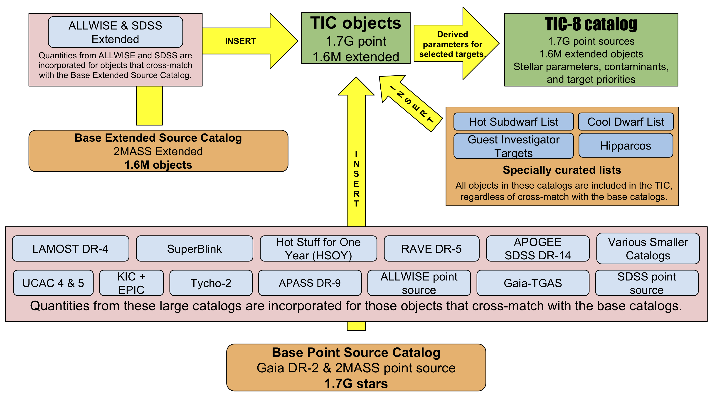

The Mikulski Archive for Space Telescopes (MAST)
The official archive for TESS mission data products is the Mikulski Archive for Space Telescopes (MAST) which is hosted at the Space Telescope Science Institute (STScI).
MAST has created a Summary page with information on data access, tools, and resources for TESS data. Brief descriptions are provided below,
MAST Portal
Download light curves, target pixel, and data validation files for a few targets. Download full frame images for a few CCDs. Conduct small searches within the TESS Input Catalog (TIC) or Candidate Target List (CTL) as discussed below. Find data from other missions for your target.
TESS Input Catalog (TIC)
To meet the primary mission goals, an all-sky catalog was generated to act as a basis for target selection. The TESS Target Selection Working Group (TSWG) was tasked with the creation and maintenance of the catalog with the aim of compiling every optically luminous, persistent object in the sky down to the limits of available wide-field photometric catalogs including both point sources and extended sources. This enables the selection of optimal targets to search for small transiting planets and allows flux contamination to be calculated in an optimal aperture for each target (critical due to the 21 arcsec TESS pixels). The resulting catalog is the source from which the >200,000 primary mission targets were selected and is known as the TESS Input Catalog (TIC).
The TIC was assembled based on the Gaia DR2 catalog, and augmented with data from many additional catalogs to create a full list of point sources and extended sources that could be observed by TESS. The input catalog data are used to determine the physical and observational parameters of many of the TIC stars, including stellar radius, stellar mass, and effective temperature. TIC-8 includes 1.7 billion point sources and about 100 million extended sources. A visual overview of the input catalogs and methodology used to construct the TIC is shown in the schematic below.

Overview of the photometric catalogs used to construct the TESS Input Catalog (TIC). Yellow arrows depict the order that catalogs are cross-matched and/or merged. The final TIC (TIC-8 as of 2019-06-01) is represented by the green box at the upper right. Image Credit: Stassun et al. 2019.
The TIC can be directly accessed through the Mikulski Archive for Space Telescopes (MAST) Portal. First the user must select MAST Catalogs as the collection and then TESS Input v8 as the Mission. A full description of the assembly, content, and properties of the TIC can be found in “The Revised Tess Input Catalog And Candidate Target List” paper.
The Candidate Target List (CTL)
A subset of the TIC is the Candidate Target List. This is a set of targets selected as likely good targets for transit detection and consists of two main components.
- All TIC stars brighter than TESS magnitude = 13, and an estimated stellar radii smaller than R⊙.
- All stars included in the curated Cool Dwarf Catalog (CDC).
The CTL is a list of ~9.5 million stars, each evaluated according to a metric that prioritizes the star for transit detection, which incorporate the T-mag, stellar radius, estimated flux contamination, and number of sectors of observation. To search the CTL data please go to the MAST Portal as above, select MAST Catalogs as the collection and then TESS CTL v8.01 as the Mission.
For more information on the TIC and CTL please visit the MIT page.
MAST API/astroquery
Search for, and retrieve, TESS data products programmatically based on a list of coordinates or target names. Interact with observational data, TIC, and CTL catalogs in programs you write.
exo.MAST
Find MAST data (including TESS) for known planets and TOIs, matched to orbital phase. Plot sector-stitched DV light curves. Access to exoplanet parameters with references.
ExoFOP-TESS
This website optimizes resources and facilitates collaboration in follow-up studies of targets observed by TESS. The website provides stellar parameters from the TESS Input Catalog (TIC), which is served by the MAST archive, and planet parameters from the NASA Exoplanet Archive.
TESSCut
Create time series pixel cutouts from the TESS full frame images. Find out what sectors / cameras / detectors a target was observed in. Further information can be found here.
Bulk downloads
Download all light curves / target pixel files for a given sector. Download all light curves / target pixel files for a given GI program. Download all full frame images for a given sector. Download the entire TOI or TCE table. Download the current TIC and CTL.
Archive manual
Step-by-step instructions on how to use MAST web interfaces for TESS. Get Python notebook tutorials on using TESS data and MAST tools. Access the TIC and CTL "live" release notes. Learn how to contribute TESS-related data products to MAST.
Data products at MAST
The TESS mission page at MAST contains the latest news and updates on TESS products. The following TESS data products and catalogs are currently available:
- Two-minute cadence target pixel files
- Two-minute cadence light curves
- Twenty-second cadence target pixel files
- Twenty-second cadence light curves
- Data validation time series files
- Full frame images (calibrated and uncertainty files)
- Cotrending basis vectors files
- Simulated Data files
- Artifact removal pixel files
- Background pixel files
- Auxiliary data for calibration
- Collateral data files
- Reverse clock files
- Ancillary engineering files
- Latest SPICE kernels (bsp and tsc binary files)
Catalogs at MAST
- TESS Input Catalog (TIC)
- Candidate Target List (CTL)
- Revised stellar parameters of Kepler targets (Q1-Q16)
- Revised stellar parameters of Kepler targets (Q1-Q17)
- Kepler Objects of Interest (KOI)
- Kepler/GALEX cross match catalog
- False positive working group tables
- Observed targets by quarter
For more information about the specific products that TESS provides see our data products page.